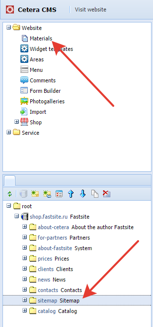
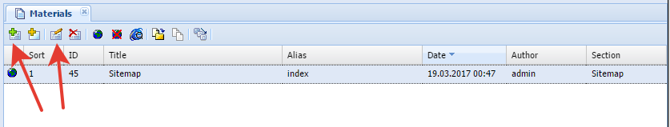
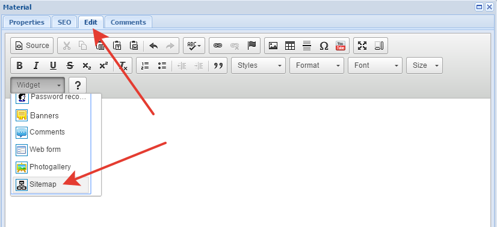
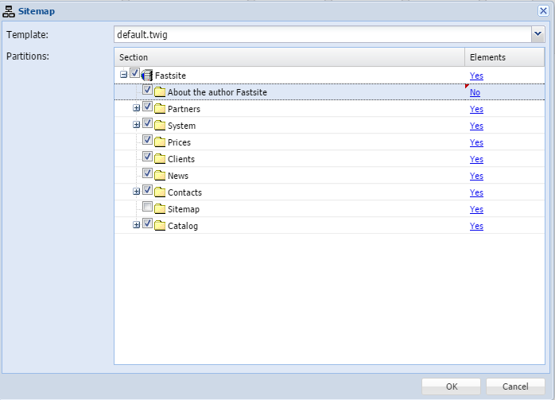
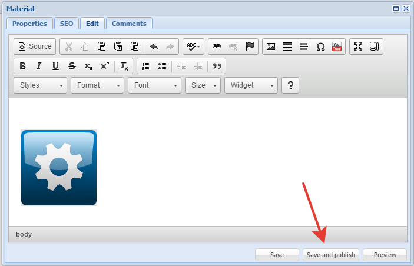
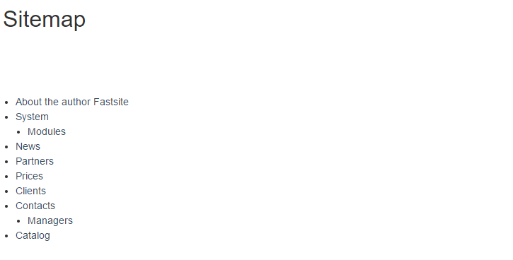

Go to the materials section in which you want to display the site map.

Select an existing material or create new.

Go to the tab Edit and in the drop-down list "Widget" choose "Sitemap".

In the widget settings.

In the "Template" you choose a template to display a site map.
In the field "Partitions" shows all of the partitions, linked to the site. You can customize the data from any of the sections should be displayed in the site map.
Column "Section" gives you the ability to choose the right for output sections.
Column "Elements" - "Yes" tells the system that you want to display all of the elements that are included in this section.
Save the changes and publish the material.

Open the page with previously added a site map.

Done.